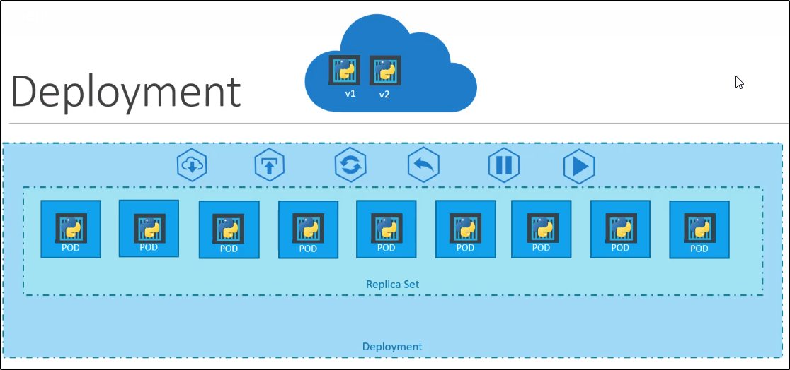

Deployment
Dimentichiamoci di PODs e Replica.
Parliamo di come vorresti deployare la tua applicazione,
in un Production Environment.
Esempio: Supponi di avere un Web Server da deployare in Production Environment.
Per questo, necessiti di più instanze del webserver.
Inoltre, vuoi che quanto il container riceve un upgrade o cambiamento (e.g. container su Docker Image)
possano essere aggiornati tutti gli altri container già deployati.
Per upgradearli, li upgradeiamo uno alla volta (detto: Rolling Upgrades)
Ora, supponiamo che durante un upgrade qualcosa va storto:
vorresti avere la possibilità di poter fare Rolling-back e tornare alla versione precedente.
Altre cose che vorresti fare solo: allocare risorse, modificare il web server etc.
Metti che vorresti pure tipo "mettere in pausa" i change e pubblicarli tutti in una volta.
Tutte queste cose sono disponibili nei deployment di Kubernetes.
I Deployment sono elementi gerarchicamente più sopra dei ReplicaSet,
permettono tutto ciò che è stato detto in precedenza.

Quindi: come si crea un Deployment?
Il template è praticamente identico al template di ReplicaSet: cambia solo il Kind!
Come potremmo usare i Deployment vedremo più in la.